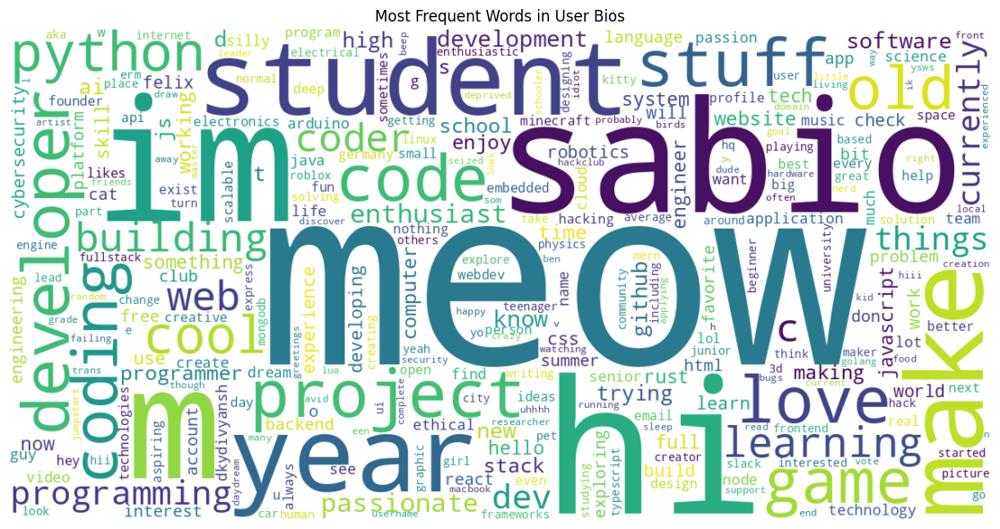

Requirement already satisfied: pandas in /home/ajayanto/jupyter-env/.venv/lib/python3.13/site-packages (2.3.1)
Requirement already satisfied: plotly in /home/ajayanto/jupyter-env/.venv/lib/python3.13/site-packages (6.3.0)
Requirement already satisfied: wordcloud in /home/ajayanto/jupyter-env/.venv/lib/python3.13/site-packages (1.9.4)
Requirement already satisfied: matplotlib in /home/ajayanto/jupyter-env/.venv/lib/python3.13/site-packages (3.10.5)
Requirement already satisfied: numpy in /home/ajayanto/jupyter-env/.venv/lib/python3.13/site-packages (2.3.2)
Requirement already satisfied: kaleido in /home/ajayanto/jupyter-env/.venv/lib/python3.13/site-packages (1.0.0)
Requirement already satisfied: pyarrow in /home/ajayanto/jupyter-env/.venv/lib/python3.13/site-packages (21.0.0)
Requirement already satisfied: python-dateutil>=2.8.2 in /home/ajayanto/jupyter-env/.venv/lib/python3.13/site-packages (from pandas) (2.9.0.post0)
Requirement already satisfied: pytz>=2020.1 in /home/ajayanto/jupyter-env/.venv/lib/python3.13/site-packages (from pandas) (2025.2)
Requirement already satisfied: tzdata>=2022.7 in /home/ajayanto/jupyter-env/.venv/lib/python3.13/site-packages (from pandas) (2025.2)
Requirement already satisfied: narwhals>=1.15.1 in /home/ajayanto/jupyter-env/.venv/lib/python3.13/site-packages (from plotly) (2.1.1)
Requirement already satisfied: packaging in /home/ajayanto/jupyter-env/.venv/lib/python3.13/site-packages (from plotly) (25.0)
Requirement already satisfied: pillow in /home/ajayanto/jupyter-env/.venv/lib/python3.13/site-packages (from wordcloud) (11.3.0)
Requirement already satisfied: contourpy>=1.0.1 in /home/ajayanto/jupyter-env/.venv/lib/python3.13/site-packages (from matplotlib) (1.3.3)
Requirement already satisfied: cycler>=0.10 in /home/ajayanto/jupyter-env/.venv/lib/python3.13/site-packages (from matplotlib) (0.12.1)
Requirement already satisfied: fonttools>=4.22.0 in /home/ajayanto/jupyter-env/.venv/lib/python3.13/site-packages (from matplotlib) (4.59.1)
Requirement already satisfied: kiwisolver>=1.3.1 in /home/ajayanto/jupyter-env/.venv/lib/python3.13/site-packages (from matplotlib) (1.4.9)
Requirement already satisfied: pyparsing>=2.3.1 in /home/ajayanto/jupyter-env/.venv/lib/python3.13/site-packages (from matplotlib) (3.2.3)
Requirement already satisfied: choreographer>=1.0.5 in /home/ajayanto/jupyter-env/.venv/lib/python3.13/site-packages (from kaleido) (1.0.9)
Requirement already satisfied: logistro>=1.0.8 in /home/ajayanto/jupyter-env/.venv/lib/python3.13/site-packages (from kaleido) (1.1.0)
Requirement already satisfied: orjson>=3.10.15 in /home/ajayanto/jupyter-env/.venv/lib/python3.13/site-packages (from kaleido) (3.11.2)
Requirement already satisfied: simplejson>=3.19.3 in /home/ajayanto/jupyter-env/.venv/lib/python3.13/site-packages (from choreographer>=1.0.5->kaleido) (3.20.1)
Requirement already satisfied: six>=1.5 in /home/ajayanto/jupyter-env/.venv/lib/python3.13/site-packages (from python-dateutil>=2.8.2->pandas) (1.17.0)
0
Imports and setup
Code
import pandas as pdimport plotly.express as pximport plotly.graph_objects as gofrom plotly.subplots import make_subplotsfrom wordcloud import WordCloudimport matplotlib.pyplot as pltimport reimport numpy as npimport matplotlib.pyplot as plt from pathlib import Pathimport jsonimport plotly.io as piodf = pd.read_parquet('../data/users.parquet')index = {"numerical":{},"top":{},"graphs":{},}
Code
print("Dataset shape:", df.shape)print("\nColumns:", df.columns.tolist())print("\nData types:")print(df.dtypes)print("\nFirst few rows:")df.head()
Compute and display the average of projects_count.
Code
avg_projects = pd.to_numeric(df['projects_count'], errors='coerce').mean()print(f"Average projects per user: {avg_projects:.2f}")save_to_index('avg_projects', name='Average projects per user', description='The average number of projects per user.', data=float(avg_projects), type='numerical')
Average projects per user: 0.40
Average devlogs per user
Compute and display the average of devlogs_count.
Code
avg_devlogs = pd.to_numeric(df['devlogs_count'], errors='coerce').mean()print(f"Average devlogs per user: {avg_devlogs:.2f}")save_to_index('avg_devlogs', name='Average devlogs per user', description='The average number of devlogs per user.', data=float(avg_devlogs), type='numerical')
Average devlogs per user: 1.61
Average coding time per user (hours)
Compute and display the average of coding_time_seconds converted to hours.
Code
avg_coding_hours = pd.to_numeric(df['coding_time_seconds'], errors='coerce').mean() /3600print(f"Average coding time per user: {avg_coding_hours:.2f} hours")save_to_index('avg_coding_hours', name='Average coding time per user', description='The average coding time per user in hours.', data=float(avg_coding_hours), type='numerical')
Average coding time per user: 12.20 hours
Average balance per user
Compute and display the average of balance.
Code
avg_balance = pd.to_numeric(df['balance'], errors='coerce').mean()print(f"Average balance per user: {avg_balance:.2f}")save_to_index('avg_balance', name='Average balance per user', description='The average balance per user.', data=float(avg_balance), type='numerical')
Average balance per user: 19.12
Average votes per user
Compute and display the average of votes_count.
Code
avg_votes = pd.to_numeric(df['votes_count'], errors='coerce').mean()print(f"Average votes per user: {avg_votes:.2f}")save_to_index('avg_votes', name='Average votes per user', description='The average number of votes per user.', data=float(avg_votes), type='numerical')
Average votes per user: 4.18
Average ships per user
Compute and display the average of ships_count.
Code
avg_ships = pd.to_numeric(df['ships_count'], errors='coerce').mean()print(f"Average ships per user: {avg_ships:.2f}")save_to_index('avg_ships', name='Average ships per user', description='The average number of ships per user.', data=float(avg_ships), type='numerical')
Average ships per user: 0.16
Inactive users analysis
Count users with zero activity across different metrics to identify inactive accounts.
Code
_df = df.copy()for col in ['balance', 'coding_time_seconds', 'ships_count', 'projects_count', 'devlogs_count', 'votes_count']: _df[f'{col}_num'] = pd.to_numeric(_df[col], errors='coerce').fillna(0)inactive_stats = {'zero_balance': (_df['balance_num'] ==0).sum(),'zero_coding_time': (_df['coding_time_seconds_num'] ==0).sum(),'zero_ships': (_df['ships_count_num'] ==0).sum(),'zero_projects': (_df['projects_count_num'] ==0).sum(),'zero_devlogs': (_df['devlogs_count_num'] ==0).sum(),'zero_votes': (_df['votes_count_num'] ==0).sum()}completely_inactive = _df[ (_df['balance_num'] ==0) & (_df['coding_time_seconds_num'] ==0) & (_df['ships_count_num'] ==0) & (_df['projects_count_num'] ==0) & (_df['devlogs_count_num'] ==0) & (_df['votes_count_num'] ==0)].shape[0]inactive_stats['completely_inactive'] = completely_inactivetotal_users =len(_df)print("Inactive Users Analysis:")print(f"Total users: {total_users}")print(f"Users with zero balance: {inactive_stats['zero_balance']} ({inactive_stats['zero_balance']/total_users*100:.1f}%)")print(f"Users with zero coding time: {inactive_stats['zero_coding_time']} ({inactive_stats['zero_coding_time']/total_users*100:.1f}%)")print(f"Users with zero ships: {inactive_stats['zero_ships']} ({inactive_stats['zero_ships']/total_users*100:.1f}%)")print(f"Users with zero projects: {inactive_stats['zero_projects']} ({inactive_stats['zero_projects']/total_users*100:.1f}%)")print(f"Users with zero devlogs: {inactive_stats['zero_devlogs']} ({inactive_stats['zero_devlogs']/total_users*100:.1f}%)")print(f"Users with zero votes: {inactive_stats['zero_votes']} ({inactive_stats['zero_votes']/total_users*100:.1f}%)")print(f"Completely inactive users (all zeros): {completely_inactive} ({completely_inactive/total_users*100:.1f}%)")inactive_with_percentages = {}for key, value in inactive_stats.items(): inactive_with_percentages[key] = {'count': int(value),'percentage': round(value/total_users*100, 1) }inactive_with_percentages['total_users'] =int(total_users)save_to_index('inactive_users', name='Inactive users analysis', description='Count and percentage of users with zero activity across different metrics.', data=inactive_with_percentages, type='numerical')
Inactive Users Analysis:
Total users: 21718
Users with zero balance: 20303 (93.5%)
Users with zero coding time: 12726 (58.6%)
Users with zero ships: 19868 (91.5%)
Users with zero projects: 17497 (80.6%)
Users with zero devlogs: 18341 (84.5%)
Users with zero votes: 18858 (86.8%)
Completely inactive users (all zeros): 12641 (58.2%)
Custom CSS usage
Analyze how many users have custom CSS.
Code
custom_css_not_null = df['custom_css'].notna() & (df['custom_css'].astype(str).str.strip() !='') & (df['custom_css'].astype(str) !='nan')users_with_css = custom_css_not_null.sum()total_users =len(df)css_percentage = (users_with_css / total_users) *100print(f"Users with custom CSS: {users_with_css} out of {total_users} ({css_percentage:.1f}%)")print(f"Users without custom CSS: {total_users - users_with_css} ({100- css_percentage:.1f}%)")css_stats = {'users_with_css': int(users_with_css),'users_without_css': int(total_users - users_with_css),'percentage_with_css': round(css_percentage, 1),'percentage_without_css': round(100- css_percentage, 1),'total_users': int(total_users)}save_to_index('custom_css_usage', name='Custom CSS usage', description='Analysis of how many users have custom CSS.', data=css_stats, type='numerical')
Users with custom CSS: 37 out of 21718 (0.2%)
Users without custom CSS: 21681 (99.8%)
Top stuff
Shows the top stuff
Top 3 users by projects count
Show the top 3 users sorted by projects count
Code
_df = df.copy()_df['projects_count_num'] = pd.to_numeric(_df['projects_count'], errors='coerce')_df['display_name_clean'] = _df['display_name'].astype('object').fillna('(unnamed)').astype(str)top3 = (_df[['id', 'display_name_clean', 'projects_count_num']] .dropna() .nlargest(3, 'projects_count_num') .copy())top3['projects_count_num'] = top3['projects_count_num'].astype(int)top3['profile_link'] = top3['id'].apply(lambda x: f"https://summer.hackclub.com/users/{x}")top3.reset_index(drop=True, inplace=True)print("Top 3 users by projects count:")save_to_index('top_users_projects', name='Top 3 users by projects count', description='The top 3 users by number of projects.', data=top3, type='top')top3
Top 3 users by projects count:
id
display_name_clean
projects_count_num
profile_link
0
9550
Suhail
20
https://summer.hackclub.com/users/9550
1
1297
YASH PANCHAL
19
https://summer.hackclub.com/users/1297
2
191
Anirudh
16
https://summer.hackclub.com/users/191
Top 3 users by coding time
Show the top 3 users sorted by coding time (hours)
Code
_df = df.copy()_df['coding_time_hours'] = pd.to_numeric(_df['coding_time_seconds'], errors='coerce') /3600_df['display_name_clean'] = _df['display_name'].astype('object').fillna('(unnamed)').astype(str)top3 = (_df[['id', 'display_name_clean', 'coding_time_hours']] .dropna() .nlargest(3, 'coding_time_hours') .copy())top3['coding_time_hours'] = top3['coding_time_hours'].round(2)top3['profile_link'] = top3['id'].apply(lambda x: f"https://summer.hackclub.com/users/{x}")top3.reset_index(drop=True, inplace=True)print("Top 3 users by coding time (hours):")save_to_index('top_users_coding_time', name='Top 3 users by coding time', description='The top 3 users by coding time (in hours).', data=top3, type='top')top3
Top 3 users by coding time (hours):
id
display_name_clean
coding_time_hours
profile_link
0
16574
OneCheetah
1561.54
https://summer.hackclub.com/users/16574
1
11921
Shivam Gupta
1537.10
https://summer.hackclub.com/users/11921
2
4693
Trou
549.74
https://summer.hackclub.com/users/4693
Top 3 users by balance
Show the top 3 users sorted by balance
Code
_df = df.copy()_df['balance_num'] = pd.to_numeric(_df['balance'], errors='coerce')_df['display_name_clean'] = _df['display_name'].astype('object').fillna('(unnamed)').astype(str)top3 = (_df[['id', 'display_name_clean', 'balance_num']] .dropna() .nlargest(3, 'balance_num') .copy())top3['balance_num'] = top3['balance_num'].astype(int)top3['profile_link'] = top3['id'].apply(lambda x: f"https://summer.hackclub.com/users/{x}")top3.reset_index(drop=True, inplace=True)print("Top 3 users by balance:")save_to_index('top_users_balance', name='Top 3 users by balance', description='The top 3 users by balance.', data=top3, type='top')top3
Top 3 users by balance:
id
display_name_clean
balance_num
profile_link
0
1027
Maksiks
5093
https://summer.hackclub.com/users/1027
1
11144
89 votes to go
4186
https://summer.hackclub.com/users/11144
2
112
Checkers
3661
https://summer.hackclub.com/users/112
Top 3 users by votes
Show the top 3 users sorted by votes count
Code
_df = df.copy()_df['votes_count_num'] = pd.to_numeric(_df['votes_count'], errors='coerce')_df['display_name_clean'] = _df['display_name'].astype('object').fillna('(unnamed)').astype(str)top3 = (_df[['id', 'display_name_clean', 'votes_count_num']] .dropna() .nlargest(3, 'votes_count_num') .copy())top3['votes_count_num'] = top3['votes_count_num'].astype(int)top3['profile_link'] = top3['id'].apply(lambda x: f"https://summer.hackclub.com/users/{x}")top3.reset_index(drop=True, inplace=True)print("Top 3 users by votes:")save_to_index('top_users_votes', name='Top 3 users by votes', description='The top 3 users by number of votes.', data=top3, type='top')top3
Top 3 users by votes:
id
display_name_clean
votes_count_num
profile_link
0
20438
Rudaiba
537
https://summer.hackclub.com/users/20438
1
3446
Saketh Baddam
536
https://summer.hackclub.com/users/3446
2
5989
Chee Yong
500
https://summer.hackclub.com/users/5989
Top 3 users by ships
Show the top 3 users sorted by ships count
Code
_df = df.copy()_df['ships_count_num'] = pd.to_numeric(_df['ships_count'], errors='coerce')_df['display_name_clean'] = _df['display_name'].astype('object').fillna('(unnamed)').astype(str)top3 = (_df[['id', 'display_name_clean', 'ships_count_num']] .dropna() .nlargest(3, 'ships_count_num') .copy())top3['ships_count_num'] = top3['ships_count_num'].astype(int)top3['profile_link'] = top3['id'].apply(lambda x: f"https://summer.hackclub.com/users/{x}")top3.reset_index(drop=True, inplace=True)print("Top 3 users by ships:")save_to_index('top_users_ships', name='Top 3 users by ships', description='The top 3 users by number of ships.', data=top3, type='top')top3
Top 3 users by ships:
id
display_name_clean
ships_count_num
profile_link
0
9550
Suhail
19
https://summer.hackclub.com/users/9550
1
1297
YASH PANCHAL
17
https://summer.hackclub.com/users/1297
2
5396
Abū al-Barāʾ
14
https://summer.hackclub.com/users/5396
Graphical Data
Shows quite a few graphs on the data
No of Users registered per Date
This chart shows the number of users registered on each date using the created_at column.
Code
date_series = pd.to_datetime(df['created_at'], errors='coerce')counts = ( pd.DataFrame({'date': date_series.dt.date}) .dropna(subset=['date']) .groupby('date') .size() .reset_index(name='user_count') .sort_values('date'))counts['date'] = pd.to_datetime(counts['date'])counts['rolling_7d'] = counts['user_count'].rolling(7, min_periods=1).mean()fig = px.bar( counts, x='date', y='user_count', title='Users Registered per Day', labels={'date': 'Date', 'user_count': 'Users'}, color_discrete_sequence=['#636EFA'])fig.add_scatter( x=counts['date'], y=counts['rolling_7d'], name='7-day average', mode='lines', line=dict(color='#EF553B', width=2))fig.update_traces(hovertemplate='Date=%{x|%Y-%m-%d}<br>Users=%{y}')fig.update_layout( hovermode='x unified', bargap=0.15, height=max(DEFAULT_HEIGHT, 420), xaxis=dict(title='Date', tickformat='%b %Y', showgrid=False, rangeslider=dict(visible=True)), yaxis=dict(title='Users', showgrid=True, gridcolor='rgba(0,0,0,0.08)'))fig.show()save_plotly(fig, name='users_per_day', description='Number of users registered per day with 7-day rolling mean', friendly_name='Users Registered per Day')
Unable to display output for mime type(s): application/vnd.plotly.v1+json
Top users by projects and coding time
Two horizontal bar charts: total projects per user (top 12) and individual users with the highest coding time (top 12).
Unable to display output for mime type(s): application/vnd.plotly.v1+json
Projects vs coding time
Which users have high project count and high coding time?
Code
_df = df.copy()_df['projects_count_num'] = pd.to_numeric(_df['projects_count'], errors='coerce')_df['coding_time_hours'] = pd.to_numeric(_df['coding_time_seconds'], errors='coerce') /3600_df['devlogs_count_num'] = pd.to_numeric(_df['devlogs_count'], errors='coerce')plot_df = _df.dropna(subset=['projects_count_num', 'coding_time_hours']).copy()kwargs = {}if plot_df['devlogs_count_num'].notna().any(): kwargs['size'] ='devlogs_count_num' kwargs['size_max'] =24fig = px.scatter( plot_df, x='projects_count_num', y='coding_time_hours', hover_data={'display_name': True, 'id': True,'projects_count_num': True, 'coding_time_hours': ':.1f'}, labels={'projects_count_num': 'Projects Count', 'coding_time_hours': 'Coding Time (hours)','devlogs_count_num': 'Devlogs Count'}, title='Projects vs Coding Time',**kwargs)fig.update_layout(height=max(DEFAULT_HEIGHT, 450), margin=dict(l=60, r=30, t=60, b=50))fig.show()save_plotly(fig, name='projects_vs_coding_time', description='Scatter plot of projects count versus coding time per user', friendly_name='Projects vs Coding Time')
Unable to display output for mime type(s): application/vnd.plotly.v1+json
Distribution of coding time
How is the coding time spread out?
Code
s = pd.to_numeric(df['coding_time_seconds'], errors='coerce') /3600# Convert to hoursfig = px.histogram( s.dropna(), nbins=40, title='Distribution of Coding Time per User', labels={'value': 'Hours', 'count': 'Users'}, color_discrete_sequence=['#636EFA'])fig.update_traces(marker_line_color='white', marker_line_width=0.5)fig.update_layout(bargap=0.05, height=max(DEFAULT_HEIGHT -20, 400), xaxis_title='Hours', yaxis_title='Users')fig.show()save_plotly(fig, name='coding_time_distribution', description='Histogram of coding time per user', friendly_name='Coding Time Distribution')
Unable to display output for mime type(s): application/vnd.plotly.v1+json
Distribution of projects count
How many projects do users typically have?
Code
s = pd.to_numeric(df['projects_count'], errors='coerce')fig = px.histogram( s.dropna(), nbins=30, title='Distribution of Projects Count per User', labels={'value': 'Projects', 'count': 'Users'}, color_discrete_sequence=['#EF553B'])fig.update_traces(marker_line_color='white', marker_line_width=0.5)fig.update_layout(bargap=0.05, height=max(DEFAULT_HEIGHT -20, 400), xaxis_title='Projects', yaxis_title='Users')fig.show()save_plotly(fig, name='projects_count_distribution', description='Histogram of projects count per user', friendly_name='Projects Count Distribution')
Unable to display output for mime type(s): application/vnd.plotly.v1+json
Distribution of user balances
How are user balances distributed?
Code
s = pd.to_numeric(df['balance'], errors='coerce')fig = px.histogram( s.dropna(), nbins=40, title='Distribution of User Balance', labels={'value': 'Balance', 'count': 'Users'}, color_discrete_sequence=['#19A974'])fig.update_traces(marker_line_color='white', marker_line_width=0.5)fig.update_layout(bargap=0.05, height=max(DEFAULT_HEIGHT -20, 400), xaxis_title='Balance', yaxis_title='Users')fig.show()save_plotly(fig, name='balance_distribution', description='Histogram of user balances', friendly_name='Balance Distribution')
Unable to display output for mime type(s): application/vnd.plotly.v1+json
Distribution of votes count
How are user votes distributed?
Code
s = pd.to_numeric(df['votes_count'], errors='coerce')fig = px.histogram( s.dropna(), nbins=30, title='Distribution of Votes Count per User', labels={'value': 'Votes', 'count': 'Users'}, color_discrete_sequence=['#AB63FA'])fig.update_traces(marker_line_color='white', marker_line_width=0.5)fig.update_layout(bargap=0.05, height=max(DEFAULT_HEIGHT -20, 400), xaxis_title='Votes', yaxis_title='Users')fig.show()save_plotly(fig, name='votes_count_distribution', description='Histogram of votes count per user', friendly_name='Votes Count Distribution')
Unable to display output for mime type(s): application/vnd.plotly.v1+json
Distribution of ships count
How are user ships distributed?
Code
s = pd.to_numeric(df['ships_count'], errors='coerce')fig = px.histogram( s.dropna(), nbins=25, title='Distribution of Ships Count per User', labels={'value': 'Ships', 'count': 'Users'}, color_discrete_sequence=['#FFA15A'])fig.update_traces(marker_line_color='white', marker_line_width=0.5)fig.update_layout(bargap=0.05, height=max(DEFAULT_HEIGHT -20, 400), xaxis_title='Ships', yaxis_title='Users')fig.show()save_plotly(fig, name='ships_count_distribution', description='Histogram of ships count per user', friendly_name='Ships Count Distribution')
Unable to display output for mime type(s): application/vnd.plotly.v1+json
Inactive users breakdown
Visual breakdown of users with zero activity across different metrics.
Code
_df = df.copy()# Convert to numericfor col in ['balance', 'coding_time_seconds', 'ships_count', 'projects_count', 'devlogs_count', 'votes_count']: _df[f'{col}_num'] = pd.to_numeric(_df[col], errors='coerce').fillna(0)# Calculate inactive users for each metricmetrics = {'Zero Balance': (_df['balance_num'] ==0).sum(),'Zero Coding Time': (_df['coding_time_seconds_num'] ==0).sum(), 'Zero Ships': (_df['ships_count_num'] ==0).sum(),'Zero Projects': (_df['projects_count_num'] ==0).sum(),'Zero Devlogs': (_df['devlogs_count_num'] ==0).sum(),'Zero Votes': (_df['votes_count_num'] ==0).sum()}total_users =len(_df)# Create bar chartfig = go.Figure()fig.add_trace(go.Bar( x=list(metrics.keys()), y=list(metrics.values()), text=[f'{count}<br>({count/total_users*100:.1f}%)'for count in metrics.values()], textposition='outside', marker_color=['#FF6692', '#19D3F3', '#AB63FA', '#636EFA', '#EF553B', '#00CC96']))fig.update_layout( title='Users with Zero Activity by Metric', xaxis_title='Metric', yaxis_title='Number of Users', height=max(DEFAULT_HEIGHT, 450), xaxis_tickangle=-30)fig.show()save_plotly(fig, name='inactive_users_breakdown', description='Bar chart showing number of users with zero activity for each metric', friendly_name='Inactive Users Breakdown')
Unable to display output for mime type(s): application/vnd.plotly.v1+json
Custom CSS usage breakdown
Visual breakdown of users with and without custom CSS.
Unable to display output for mime type(s): application/vnd.plotly.v1+json
Bio text analysis
Word cloud from user bios
Code
bio_texts = df['bio'].fillna('').astype(str)bio_texts = bio_texts[bio_texts.str.strip() !=''] # Remove empty biosiflen(bio_texts) >0: corpus =' '.join(bio_texts.tolist()) corpus = re.sub(r"https?://\S+", " ", corpus) # Remove URLs corpus = re.sub(r"[^A-Za-z0-9_+#-]+", " ", corpus) # Keep only alphanumeric and some symbols corpus = re.sub(r"\s+", " ", corpus).strip().lower() # Clean whitespace and lowercaseif corpus: wc = WordCloud( width=1200, height=600, background_color='white', collocations=False, max_words=300 ).generate(corpus) fig = plt.figure(figsize=(12, 6)) plt.imshow(wc, interpolation='bilinear') plt.axis('off') plt.title('Most Frequent Words in User Bios') plt.tight_layout() save_matplotlib_current(name='user_bio_word_cloud', description='Word cloud of most frequent words in user bios', friendly_name='User Bio Word Cloud') plt.show()else:print('Bio text is empty after cleaning.')else:print('No bio text found or all bios are empty.')

User activity metrics
Analysis of various user activity metrics
Code
_df = df.copy()metrics = ['projects_count', 'devlogs_count', 'votes_count', 'ships_count']for col in metrics: _df[f'{col}_num'] = pd.to_numeric(_df[col], errors='coerce')corr_data = _df[[f'{col}_num'for col in metrics]].rename(columns={'projects_count_num': 'Projects','devlogs_count_num': 'Devlogs', 'votes_count_num': 'Votes','ships_count_num': 'Ships'}).corr()fig = px.imshow( corr_data, labels=dict(color='Correlation'), color_continuous_scale='RdBu_r', aspect='auto', title='User Activity Metrics Correlation')for i inrange(len(corr_data.columns)):for j inrange(len(corr_data.columns)): fig.add_annotation( x=i, y=j, text=f'{corr_data.iloc[j, i]:.2f}', showarrow=False, font=dict(color='black'ifabs(corr_data.iloc[j, i]) <0.5else'white') )fig.update_layout(height=max(DEFAULT_HEIGHT, 450))fig.show()save_plotly(fig, name='user_activity_correlation', description='Correlation matrix of user activity metrics', friendly_name='User Activity Correlation')
Unable to display output for mime type(s): application/vnd.plotly.v1+json
Save all the info to a index for web stuff
Code
index_path = EXPORT_DIR /'index.json'withopen(index_path, 'w', encoding='utf-8') as f: json.dump(index, f, indent=4)print(f'Wrote index to {index_path}')
Wrote index to /home/ajayanto/projects/SoM-Analytics/data/processed/users/index.json